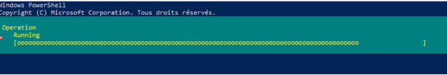
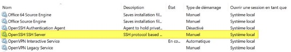
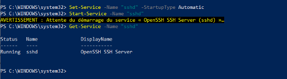
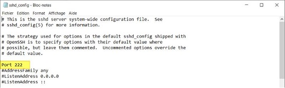
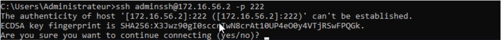

Fiche procédure protocole SSH
1. Installer OpenSSH Server sur Windows
A partir d'une console PowerShell ouverte en tant qu'administrateur, la commande suivante permet l'installation :

2. Configurer OpenSSH Server sur Windows
2.1 Démarrage automatique du serveur OpenSSH
Pour commencer la configuration, nous allons démarrer le serveur OpenSSH d'une part, et d'autre part nous allons le configurer en démarrage automatique.
Plutôt que le faire à partir de la console "Services", je vous propose d'exécuter deux commandes PowerShell, ce sera plus efficace. Voici l'état actuel du service "OpenSSH SSH Server" :

Pour démarrer le service "sshd" correspondant à "OpenSSH SSH Server", on va utiliser la commande suivante :
Ensuite, pour le modifier et définir le mode de démarrage sur "Automatique" au lieu de "Manuel" :
La commande ci-dessous vous permettra de vérifier qu'il est bien en cours d'exécution.
2.2 Configuration d'OpenSSH Server sur Windows
Sur Windows, la configuration d'OpenSSH est stockée à l'emplacement ci-dessous où l'on va trouver le fichier sshd_config :
Au sein du fichier sshd_config, nous allons retrouver les options classiques d'OpenSSH. Nous pouvons le configurer de la même façon qu'on le ferai la configuration SSH sous Linux.
Attention tout de même
À ce jour, il y a des options non supportées comme les options X11. La liste complète des options non supportées est disponible sur le site Microsoft : OpenSSH - Options non supportées
Modifier le port d'écoute SSH
Pour modifier le port d'écoute par défaut (recommandé) et utiliser un autre port que le n°22, il faut modifier l'option "Port". Pour modifier le fichier de configuration, vous devez ouvrir l'éditeur de texte en tant qu'administrateur pour avoir le droit d'enregistrer le fichier.
Ensuite, il faut décommenter la ligne "#Port 22" et changer le numéro de port, comme ceci :

Après chaque modification de la config, il est indispensable de redémarrer le service SSH pour charger les nouveaux paramètres. PowerShell permet de le faire facilement :
A la suite de la modification du port, si la connexion SSH ne fonctionne pas, regardez du côté du pare-feu Windows. En effet, lors de l'installation d'OpenSSH Server, une règle est créée pour autoriser les connexions sur le port 22.
Voici la commande pour créer une règle de pare-feu qui autorise les connexions entrantes sur le port 222 :
New-NetFirewallRule -Name sshd -DisplayName 'OpenSSH Server (sshd) - Port 222' -Enabled True -Direction Inbound -Protocol TCP -Action Allow -LocalPort 222
Information sur le contexte
Auparavant, j’ai créé un utilisateur « adminssh » afin d’utiliser celui-ci à la connexion SSH.
Dans le fichier de configuration, il faut commenter les deux lignes suivantes, sinon la directive DenyGroups ne fonctionne pas :
# Match Group administrators
# AuthorizedKeysFile __PROGRAMDATA__/ssh/administrators_authorized_keys
Redémarrez le service SSH et tentez de vous connecter à votre serveur avec un compte administrateur : l'accès doit être refusé !
2.3 Connexion en ssh :
